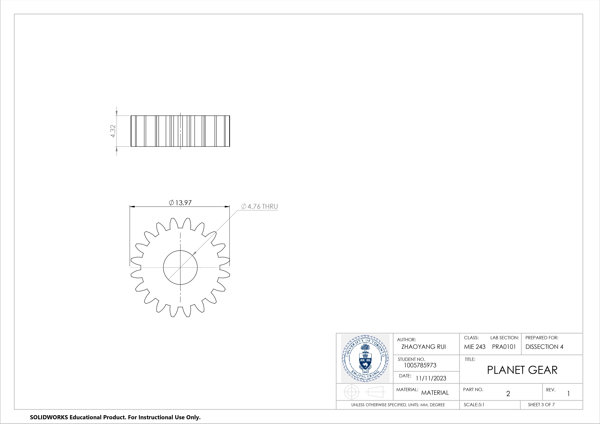
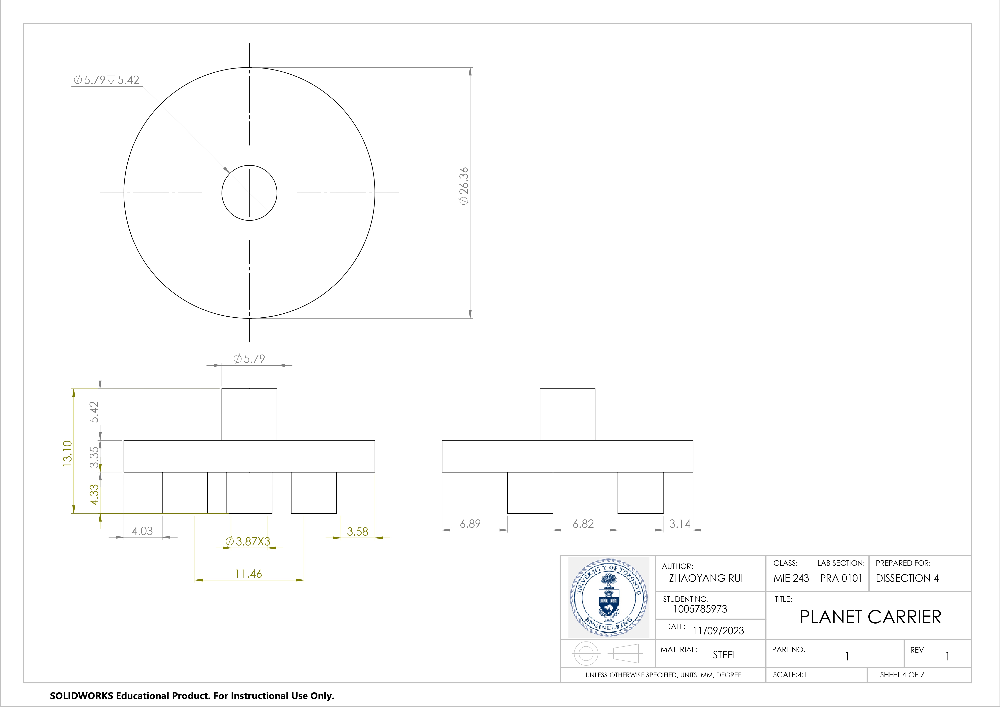
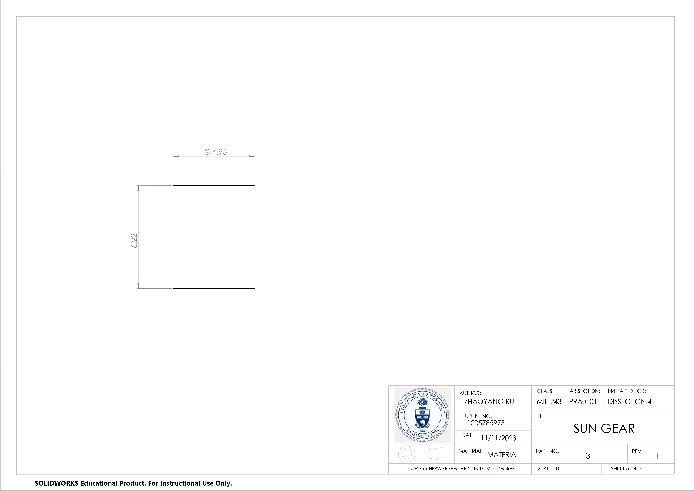

In the process of crafting the screwdriver design, we measured the measurments of the design and recorded of the dimensions for each components in the notes as an initial step. To ensure a fair distribution of tasks, we divided the workload equally among team members. We selected the values that closely matched the design specifications when generating the gears by applying the toolbox from the SolidWork software. It is noticeable that we used a cylinder as the representation of the sun gear. The visual aids provided in the graphs below showcase the specific components that I contributed to our collective effort in this group project.
  